Contact / 01
Contact by Bright
Contact shaped for education, training & learning services decisions.
Contact opens as a clear education decision hub: what Bright offers, who it helps, why it matters, and which route to take first.
The first screen combines positioning, proof, primary action, and fast internal navigation, so people can act immediately or compare the rest of the contact route with context.
Clear intakeHuman follow-upPractical reassurance
Black cinematic course hero
Filter the options
Select the closest route and Bright keeps the next step, proof, and follow-up expectation aligned with confidence and progress.
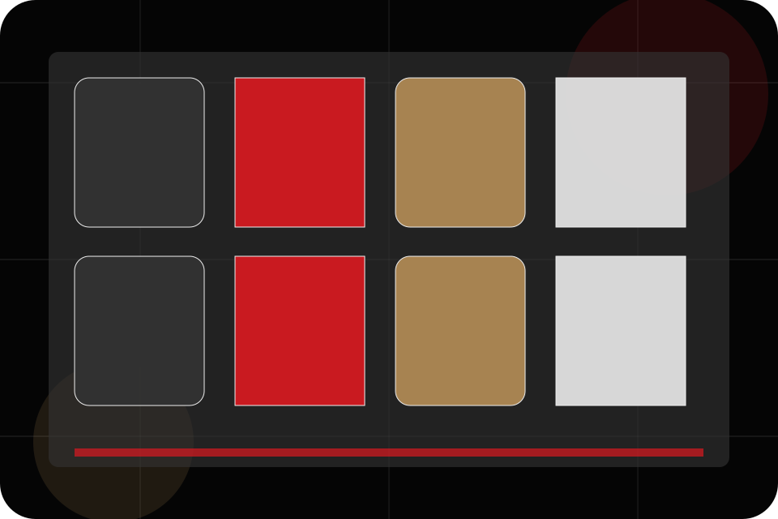
Contact / 02
Trial
Trial makes the contact path concrete: what to send, how the response works, and what Bright needs before visitors book a trial.
The section reduces contact friction by naming the channel, expected detail, privacy path, and response expectation instead of dropping visitors into a generic form.
Book Trial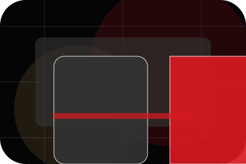
Details
What information helps Bright respond with a useful answer instead of a generic reply.
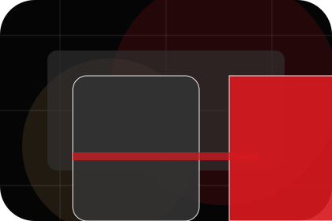
Timing
How the visitor should think about response, urgency, location, or availability.
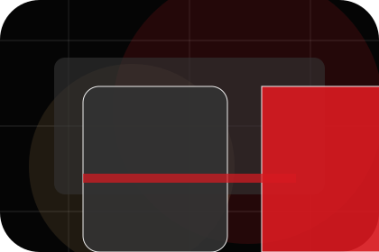
Reply
The expected next message keeps scope, timing, and the first practical step clear.
Contact / 03
Placement
Placement makes the contact path concrete: what to send, how the response works, and what Bright needs before visitors book a trial.
The section reduces contact friction by naming the channel, expected detail, privacy path, and response expectation instead of dropping visitors into a generic form.
Book TrialBright keeps placement practical: send the key details, choose the right contact route, and know what kind of reply to expect.
Book TrialContact / 04
Booking
Booking makes the contact path concrete: what to send, how the response works, and what Bright needs before visitors book a trial.
The section reduces contact friction by naming the channel, expected detail, privacy path, and response expectation instead of dropping visitors into a generic form.
Book TrialBright keeps booking practical: send the key details, choose the right contact route, and know what kind of reply to expect.
Book TrialBlack cinematic course hero
Filter the options
Select the closest route and Bright keeps the next step, proof, and follow-up expectation aligned with confidence and progress.
Contact / 05
WhatsApp makes the contact path concrete: what to send, how the response works, and what Bright needs before visitors book a trial.
The section reduces contact friction by naming the channel, expected detail, privacy path, and response expectation instead of dropping visitors into a generic form.
Book Trial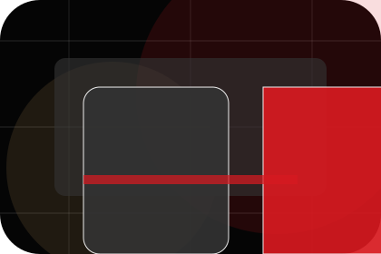
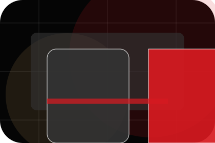
Details
What information helps Bright respond with a useful answer instead of a generic reply.
Contact / 06
Email makes the contact path concrete: what to send, how the response works, and what Bright needs before visitors book a trial.
The section reduces contact friction by naming the channel, expected detail, privacy path, and response expectation instead of dropping visitors into a generic form.
Book TrialDetails
What information helps Bright respond with a useful answer instead of a generic reply.
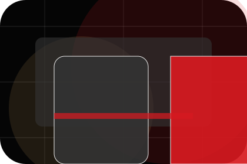
Timing
How the visitor should think about response, urgency, location, or availability.
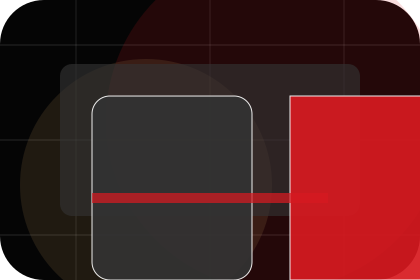
Reply
The expected next message keeps scope, timing, and the first practical step clear.
Contact / 07
Response
Response makes the contact path concrete: what to send, how the response works, and what Bright needs before visitors book a trial.
The section reduces contact friction by naming the channel, expected detail, privacy path, and response expectation instead of dropping visitors into a generic form.
Book Trial- 01
Details
What information helps Bright respond with a useful answer instead of a generic reply.
- 02
Timing
How the visitor should think about response, urgency, location, or availability.
- 03
Reply
The expected next message keeps scope, timing, and the first practical step clear.
Contact / 08
Steps
Steps explains the operating sequence so visitors can see how the first request becomes a clear recommendation and follow-up.
The steps are written from the visitor side: what they do first, what Bright clarifies, what they receive, and how support continues.
Book TrialStart
How visitors begin this route and what detail is useful at the first step.
Clarify
What Bright reviews, filters, or explains before recommending the next move.
Continue
What the visitor receives afterward, including support, proof, or a handoff to the next page.
Contact / 09
Submit
Submit makes the contact path concrete: what to send, how the response works, and what Bright needs before visitors book a trial.
The section reduces contact friction by naming the channel, expected detail, privacy path, and response expectation instead of dropping visitors into a generic form.
Book Trial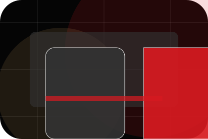
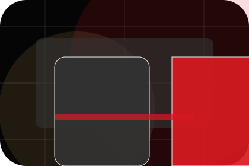
Details
What information helps Bright respond with a useful answer instead of a generic reply.
Contact / 10
Book Trial
Bright closes the contact route with a clear action, a quick reminder of the value, and a low-friction way to book a trial.
Visitors who are ready can use the primary action. Visitors who are still comparing can scan the section links, proof, and support routes before they book a trial.
Book TrialThe final block keeps the choice simple: act now, compare one more proof route, or send enough detail for a focused response.
Book Trial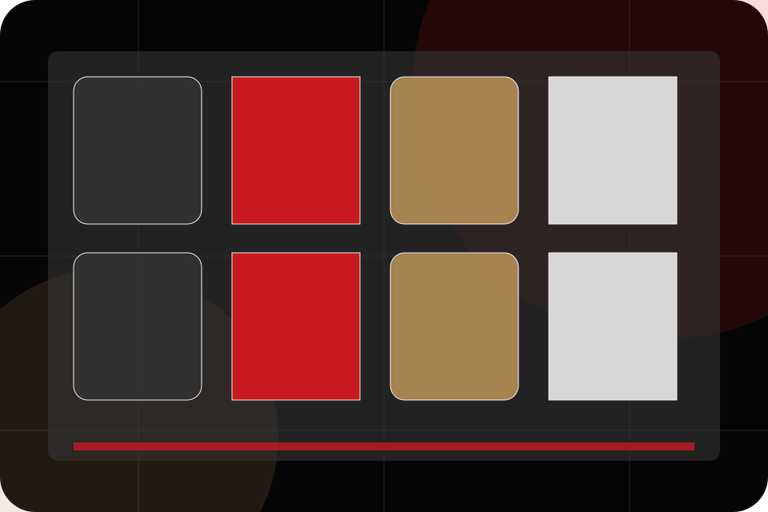
confidence and progress
Book Trial
A course-led education site with cinematic hero, lesson shelves, premium teacher proof, and trial routes. Contact ends with a direct path to book a trial, plus enough context for visitors who still need to compare.
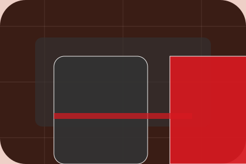
Book TrialNotes
Information is provided for planning and should be reviewed for the final client, location, and operating rules.